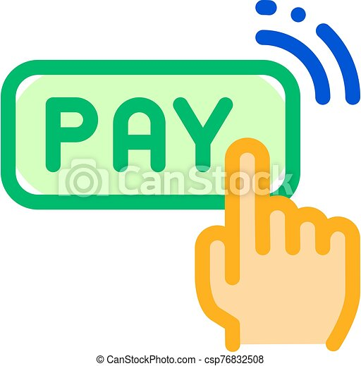
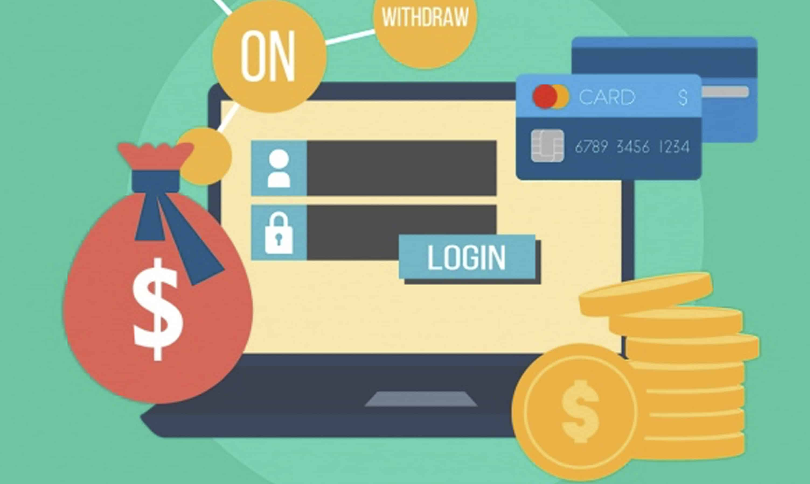

Why should you choose us?

Banking In One Click
1-Click, also called one-click or one-click buying, is the technique of allowing customers to make purchases with the payment information needed to complete the purchase having been entered by the user previously.As you surely know, security is a crucial aspect of online payments. This is why cooperating with a credible, certified payment service provider is vitally important for the one-click payment model to be effective.
Check Your Transactions
A cash transaction refers to a transaction which involves an immediate outflow of cash towards the purchase of any goods, services, or assets. Cash transaction can be consumer-oriented or business-oriented. ... Similarly, a cash transaction is also different from credit card transactions.The transactions demand for money refers specifically to money narrowly defined to include only its liquid forms, especially cash and checking account balances. This form of money demand arises from the absence of perfect synchronization of payments and receipts.Transaction demand for money is the amount of money required for current transactions of individuals and firms. ... The main reason to hold money in cash for meeting day-to-day transactions is to bridge the interval between receipt of income and expenditure.

Trust Worthy Service
Trust Bank is a financial institution that enables the customers of the bank to do transactions among one another, wherein the bank takes up the role of trustee during such transactions and help customers to transfer assets to another customer in accordance with the trust agreement terms and conditions.Trust administration involves distributing funds and property in accordance with the trust. Investment management services invest and divest assets according to the trust documents.Being trustworthy means that people in your organisation behave ethically because it's the right thing to do, not because it will make people trust them again. A reputation for trustworthiness is, again, not something you can just anoint yourself with.